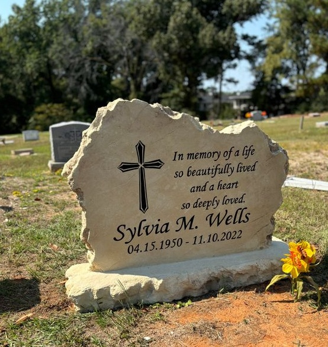

Headstone Prices in Houston TX: 2026 Guide to Costs, Options & How to Save Thousands

If you’re searching for headstone prices in Houston TX in 2026, you’re likely looking for clear, honest information during a difficult time. At Bedrock Boulders, we help Houston families create beautiful, durable custom headstones and grave markers without the high costs associated with traditional granite.
Our cultured stone memorials start at just $899 and offer excellent weather resistance for Houston’s humid, storm-prone climate — often saving families $1,000–$3,000 compared to conventional monument companies.
Why Headstone Prices Vary in Houston
Several key factors determine the final cost of a headstone in the Greater Houston area:
- Material: Traditional granite can cost significantly more than our durable cultured stone, which performs better in Texas heat and humidity with less maintenance.
- Size & Style: Single uprights, companion (double) headstones, slant markers, flat grave markers, or memorial benches.
- Customization: Engraving depth, ceramic photos, vases, borders, and unique shapes or symbols.
- Cemetery Rules: Many Houston-area cemeteries (such as Raven Hill, Morton, La Porte, or Forest Park) have specific size, base, and material requirements.
- Delivery & Installation: Local Houston production keeps shipping and setup costs low.
2026 Headstone Price Guide – Houston Market
Here’s what families are actually paying right now at Bedrock Boulders (prices include professional engraving and a free custom proof within 24 hours):
| Headstone Type | Typical Size | Starting Price (2026) | What’s Included |
|---|---|---|---|
| Single Headstone | 24" × 24" | $899 | Custom engraving + photo option |
| Companion (Double) Headstone | 36" × 24" or larger | $1,599 | Two names + shared design |
| Slant or Flat Grave Marker | 24" × 12"–18" | $540 – $1,000 | Budget-friendly ground-level option |
| Memorial Bench | 48" × 20" | $1,499 | Seating + engraving |
| Headstone + Vases + Base Package | Varies | $1,300 – $2,800 | Most popular full memorial package |
These prices are substantially lower than traditional granite suppliers in Houston, where single upright headstones often start at $2,000–$4,000+.
How Bedrock Boulders Keeps Prices Affordable
- Premium cultured stone engineered for Houston weather — more durable than many expect at a lower cost
- Fast local turnaround: most memorials completed and delivered in 6–10 weeks
- Transparent pricing with no hidden fees
- Free 24-hour custom proof so you know exactly what you’re getting
- Local delivery and coordination with Houston-area cemeteries
Ready to Honor Your Loved One?
Don’t overpay for a memorial. Get the quality, customization, and durability you want at a price that brings peace of mind.
👉 Get Your Free Custom Headstone Quote in 24 Hours
Or call us directly at (281) 901-0788 — we answer the phone and hablamos español.
Get a Free Quote Today